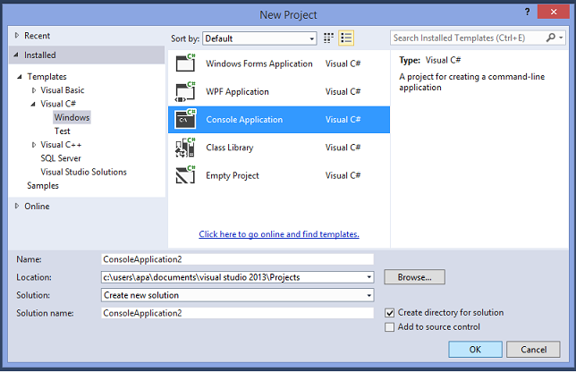
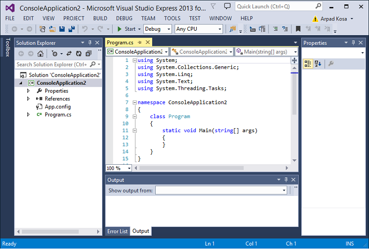

Ismerkedés a nyelvvel
Fejlesztőeszközünk
Mielőtt elkezdenénk hosszú utunkat, fel kell fegyverkeznünk a megfelelő fejlesztőeszközzel! A .NET
programozáshoz a legjobb választás a Microsoft saját terméke, a Visual Studio. A „nagy” fizetős változatok
(Professional, Ultimate) mellett létezik az ingyenes Express család is, amelyek szinte teljes körű szolgáltatást
nyújtanak.
Az Express változatok „különlegessége”, hogy a nagy változatokkal ellentétben csak egy-egy részterületre
koncentrálnak, külön változat van a webes és asztali alkalmazások készítéséhez.
Az első program
HELLO WORLD! program
Készítsük el első C# nyelven írt programunkat!
A híres “Hello World!” program elsőként Dennis Ritchie és Brian Kernighan “A C programozási nyelv” című
könyvében jelent meg, és azóta szinte hagyomány, hogy egy programozási nyelv bevezetőjeként ezt a
programot mutatják be.
A File menüben kattintsunk a New Project menüpontra, ekkor a megjelenő ablakban kiválaszthatjuk a projekt
típusát.
Mi nagyrészt Console Application sablont fogunk használni, ezzel egy parancssorban futó
programot hozhatunk létre.

Az OK gombra kattintva elkészül az első projektünk, a forráskód így néz ki:
using System;
using System.Collections.Generic;
using System.Linq;
using System.Text;
namespace TestApp
{
class Program
{
static void Main(string[] args)
{
}
}
}
Meglepően sok mindent látunk, ahhoz képest, hogy ez a program a világon semmit nem csinál. Menjünk
sorjában, egyelőre különösebb magyarázat nélkül, a következő fejezetekben mindenre fény derül. Az első négy
sorral azokat a névtereket jelöltük ki, amelyeket használni szeretnénk. Ebben az esetben a Visual Studio egy
kicsit túlbuzgó volt, egyelőre az első sor is elég lett volna, de nyugodtan hagyjunk mindent, ahogy van, még
nincs jelentősége.
A következő lépésben megadjuk a programunk névterét, ez alapértelmezés szerint az lesz, amit a New Project
ablakban a Name mezőben megadtunk.
A class Program sor az, ami egy kicsit ijesztő lehet a kezdő programozó számára. A C# tisztán objektumorientált
nyelv, ami egyelőre azt jelenti számunkra, hogy bármit teszünk, azt csakis egy osztályon belül egy függvényben
vagy metódusban tehetjük. Egy osztályt a class kulcsszóval vezetünk be, amely után az osztály nevét kell írnunk.
Ebben a pillanatban még nem kell ennél többet tudnunk az objektumorientált programozásról, de nemsokára
ennek is eljön az ideje.
Nem maradt más hátra, mint a Main függvény. Ez n
agyon fontos összetevője minden C# programnak, hiszen ez
az alkalmazásunk belépési pontja, itt kezdődik el a futása. Minden C# programnak tartalmaznia kell egy Main
nevű függvényt, ellenkező esetben le sem fordul.
Vizsgáljuk meg egy kicsit a fejlesztőeszközt is!

Bal oldalon a forráskódot láthatjuk, míg a jobb oldalt az ún. Solution Explorer foglalja el. Minden esetben,
amikor egy projektet készítünk, egy ún. Solution jön létre. Egy Solution több projektet is tartalmazhat, jobb
gombbal kattintva hozhatjuk elő a hozzá tartozó helyi menüt, amely segítségével újabb projektet készíthetünk.
Ugyanígy minden projekthez is tartozik ilyen menü, amellyel pl. új elemeket adhatunk hozzá.
Látható, hogy egy „faszerű” szerkezetről van szó. A félkövér betűvel kiemelt projekt a StartUp elem, ez fog
elindulni, ha futtatjuk a Solution-t. Tetszés szerint megváltoztathatjuk ezt a beállítást a kívánt projekt helyi
menüjében (Set as StartUp project).
A projekteket „lenyitva” a hozzá tartozó fájlokat találjuk, illetve két mappát, amelyek speciális célt szolgálnak. A
Properties mappa a programról tartalmaz metaadatokat, például a készítő nevét, az aktuális verziószámot stb.
A References mappa pedig a projektben használt osztálykönyvtárakat sorolja fel. Ebből rögtön kétféle is van, a
BCL-hez tartozó könyvtárak (alapbeállítás szerint) nem másolódnak be a program kimeneti mappájába, míg a
külső könyvtárak igen. Új projekt létrehozásakor is több könyvtárat találunk, ezek közül egyelőre a System és
System.Core nélkülözhetetlen.
Ahhoz, hogy a programunkat futtassuk, először le kell fordítanunk. Ezt a Build menüben található Build
Solution paranccsal tehetjük meg. Ha több projektünk is van, egyenként is fordíthatunk a helyi menüből.
Amennyiben nem kapunk hibaüzenetet, illetve a bal alsó sarokban megjelenik a Build Succeeded felirat, akkor
a programunk szintaktikailag helyes, megpróbálhatjuk futtatni.
Ehhez a Debug menü Start Debugging illetve Start Without Debugging parancsait kell használnunk. Ha a
projekt a legutóbbi fordítás óta megváltozott, akkor automatikusan le is fordítja a programunkat a Visual
Studio. Használhatunk gyorsbillentyűket is, F6 a fordítás, míg F5 a futtatás (és fordítás, ha szükséges). Végezetül
szintén elérhetjük a célunk, ha a menüsorban található kis zöld fektetett háromszögre kattintunk.
Lépjünk tovább, egyelőre a Main függvényen belül fogunk tevékenykedni. Ahhoz, hogy elkészíthessük a
programunkat, tudnunk kell, hogyan kezelhetjük a parancssort a programunkból. A .NET Framework BCL-e erre
is kínál megoldást, a Console osztály lesz segítségünkre:
using System;
using System.Collections.Generic;
using System.Linq;
using System.Text;
namespace TestApp
{
class Program
{
static void Main(string[] args)
{
Console.WriteLine("Hello World");
Console.ReadKey();
}
}
}
Örömmel tapasztalhatjuk, hogy a Console szó után tett pont előhozza a választható függvények listáját. Ezt a
Visual Studio IntelliSense-nek hívja. Ha nem ajánlja fel a listát a fejlesztőeszköz, akkor elképzelhető, hogy a
kódkiegészítés nincs bekapcsolva. A visszakapcsoláshoz a következőket kell tenni:
- Tools menü -> Options
- Ha nincs bejelölve a „Show All Settings” négyzet, akkor kapcsoljuk be!
- Text Editor -> C# -> IntelliSense -> Legyen bejelölve a „Show completion list after a character is typed”
feliratú négyzet!
A WriteLine függvény kiírja a parancssorba a paraméterként kapott szöveget, majd új sort nyit. Amennyiben
szeretnénk ugyanabban a sorban maradni, használjuk a Console.Write függvényt!
A Console.ReadKey függvény feladata, hogy vár egy billentyűleütést a felhasználótól, mielőtt továbblépne a
program. Miért van erre szükség? A legegyszerűbb, ha kipróbáljuk a programot nélküle. Amit látni fogunk, az
egy villanás, hiszen a programunk csak annyit tesz, hogy kiír egy szöveget és kilép. Ez utóbbi miatt kellett
valami, amivel megszakíthatjuk futását, és itt jön a képbe a ReadKey.